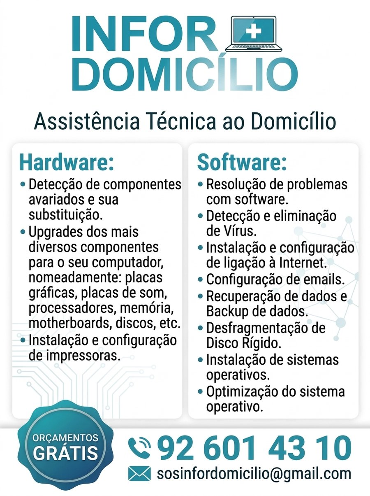
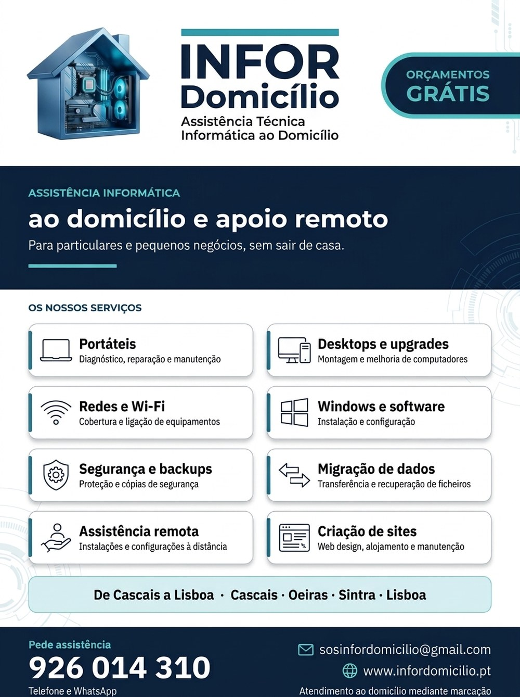

Equipamentos e sistemas
Diagnóstico, manutenção, reparação e upgrades de portáteis e desktops. Configuração de sistemas, aplicações e periféricos, com avaliação de compatibilidade e das necessidades do cliente.

Tecnologia com apoio próximo
Mais de 25 anos de experiência ensinaram-nos que uma boa assistência começa por compreender o cliente. Escutamos os sintomas, avaliamos o equipamento e explicamos o que pode ser feito, para que cada decisão seja tomada com informação e sem intervenções não aprovadas. Valorizamos a manutenção, a compatibilidade dos componentes e soluções proporcionais às necessidades reais, em vez de recomendar substituições desnecessárias.
Diagnóstico, manutenção, reparação e upgrades de portáteis e desktops. Configuração de sistemas, aplicações e periféricos, com avaliação de compatibilidade e das necessidades do cliente.
Apoio a redes e Wi-Fi, migração de ficheiros e organização de cópias de segurança. Cada solução é avaliada em função dos equipamentos e da utilização.
Explicamos as opções e as condições da intervenção antes de avançar. O acesso aos dados e as sessões de apoio remoto são combinados com o cliente.
A Infordomicilio presta assistência ao domicílio, mediante marcação, e apoio remoto quando adequado ao pedido. A atividade é exercida em nome individual, sem loja aberta ao público.
Pedir assistênciaA InforDomicílio nasceu de uma ideia simples: levar a assistência informática a casa das pessoas, sem que tivessem de sair de casa. Esse foi o ponto de partida e continua a ser a base do nosso trabalho.
O primeiro panfleto apresentava a assistência técnica ao domicílio em duas áreas. Em software: resolução de problemas, deteção e eliminação de vírus, configuração da ligação à Internet e do email, recuperação de dados e cópias de segurança, desfragmentação do disco, instalação e otimização de sistemas operativos. Em hardware: substituição de componentes avariados, upgrades e instalação e configuração de impressoras.
Ao longo de mais de 25 anos de experiência, o trabalho acompanhou a evolução da tecnologia e as necessidades dos clientes. Hoje, além da assistência ao domicílio, o serviço inclui apoio remoto, redes e Wi-Fi, segurança e cópias de segurança e criação de sites.
A forma de trabalhar mantém-se: ouvir o cliente, explicar as opções e só avançar depois da sua aprovação.
Software, hardware e impressoras, com atendimento ao domicílio.
Domicílio e apoio remoto, redes, segurança, cópias de segurança e criação de sites.




Os contactos e as condições atuais são os apresentados neste site; as referências a orçamentos grátis e ao email antigo nas imagens não substituem as condições acordadas para cada pedido. Passa o rato por cima para ampliar.
Marcas de equipamentos, componentes e software com que trabalhamos
Nomes e logótipos pertencem aos respetivos proprietários; não implicam parceria ou afiliação.